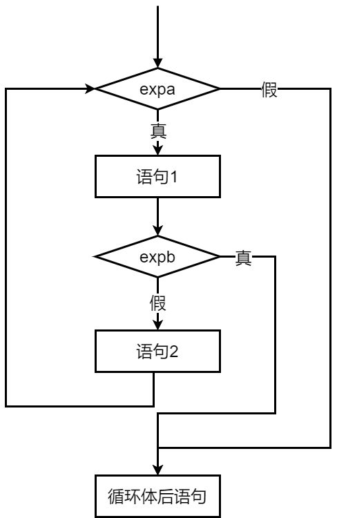

程序设计基础 · 第4次课 · 第二次课 · 第1课时
从多名受试者多次测量，到阶乘和，理解“外层一轮，内层完整一轮”
while次数未知，但继续条件明确。
do-while至少执行一次，再判断是否继续。
break/continue提前结束整个循环，或跳过本轮。
今天的问题：一个循环不够时怎么办？
i、j 两层循环变量| 受试者 | 第1次 | 第2次 | 第3次 | 第4次 |
|---|---|---|---|---|
| A | 72 | 73 | 71 | 72 |
| B | 68 | 69 | 70 | 68 |
| C | 80 | 78 | 79 | 80 |
受试者 A → B → C
每名受试者都要完成4次测量。
for (patient = 1; patient <= 3; patient++) {
for (measure = 1; measure <= 4; measure++) {
scanf("%d", &pulse);
printf("patient=%d, measure=%d\n", patient, measure);
}
}| 总次数 | patient |
measure |
含义 |
|---|---|---|---|
| 1 | 1 | 1 | 第1人第1次 |
| 2 | 1 | 2 | 第1人第2次 |
| 3 | 1 | 3 | 第1人第3次 |
| 4 | 1 | 4 | 第1人第4次 |
| 5 | 2 | 1 | 第2人第1次 |
内层循环变量变化更快；外层循环变量变化更慢。
💡 课堂互动：同桌两人对照 AI 生成的变量跟踪表，口述外层一轮、内层跑完一整圈的过程。

本演示工具用于直观动态演示 C 语言双重嵌套循环
for(i=1;i<=3;i++) { for(j=1;j<=4;j++) {...} } 的单步执行逻辑：
(i, j)。
i、j 的值与内层循环累计执行次数。
j=4）时，给出“内层循环完成一整圈，准备进入下一个
i”的醒目重置提醒。
输入一个正整数 \(n\) (\(n \le 16\))，计算 \(1!+2!+3!+\ldots+n!\)。
要求定义和调用函数 fact(n) 计算 \(n\) 的阶乘，如果 \(n\)
是非负数，则该函数返回 \(n\) 的阶乘，否则返回 0。
n!double fact(int n)
{
int i;
double result = 1;
for (i = 1; i <= n; i++)
result = result * i;
return result;
}1 乘到 n。1!+2!+...+n!sum = 0;
for (i = 1; i <= n; i++)
sum = sum + fact(i);i = 1, 2, ..., n，依次求每个阶乘。
fact(i) 内部再完成从1乘到i。
sum = 0;
for (i = 1; i <= n; i++) {
item = 1;
for (j = 1; j <= i; j++) {
item = item * j;
}
sum = sum + item;
}外层负责“求第几个阶乘”，内层负责“把这个阶乘算出来”。
item = 1 应该放在哪里？for (i = 1; i <= n; i++) {
item = 1;
for (j = 1; j <= i; j++)
item = item * j;
sum = sum + item;
}item = 1;
for (i = 1; i <= n; i++) {
for (j = 1; j <= i; j++)
item = item * j;
sum = sum + item;
}item=1？1!从1开始乘。
2!仍然要从1重新开始乘。
3!不能沿用上一次残留的 item。
💡 课堂互动：观察 AI 诊断出的“上一轮结果污染下一轮”典型错误，加深对内层变量初始化的记忆。
for (i = 1; i <= 100; i++) {
for (j = 1; j <= i; j++) {
printf("%d %d\n", i, j);
}
}
i=1 执行1次；i=2 执行2次；i=3 执行3次。
1+2+...+100=5050
💡 课堂互动：引导学生体验从“代码单步计数”上升到“数学公式推导算法复杂度”。
for”，而是看清问题中存在几层重复关系。